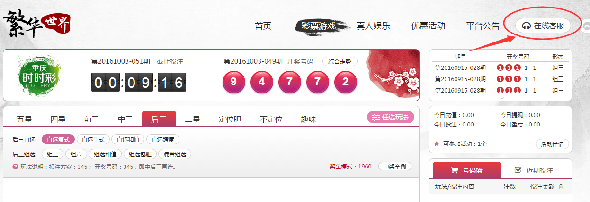
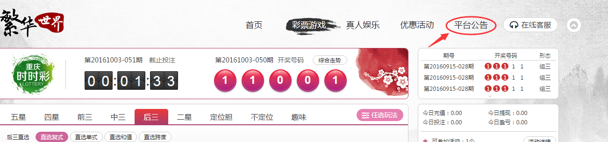
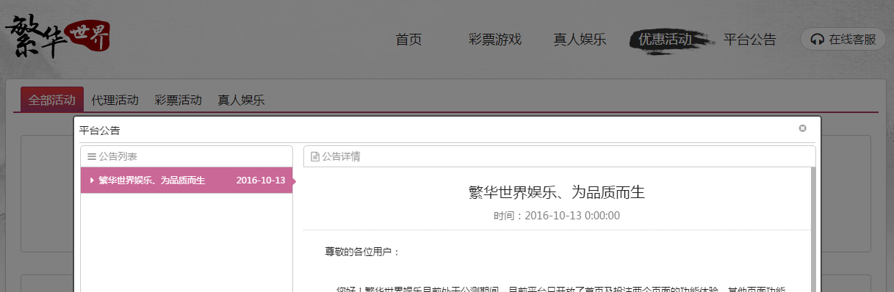

登陆繁华平台后，首页的右上方有一处“在线客服”的标志，点击此处即可联系在线客服。
在线客服全天24小时为您提供最优质且专业的咨询服务。
假如您无法打开在线客服，建议您尝试使用以下方法：
1、请尽量使用谷歌，火狐，IE等浏览器。
2、请尝试清理浏览器缓存，重新联系在线客服。
3、为了保障您的网络正常，请您在投注或者联系在线客服时，关闭后台占用网速资源较大的程序（如：pps、pptv、游戏下载等）。

1、在导航栏找到“优惠活动”菜单，点击进入。
2、进入到“优惠活动”页面后，您可以看到这些菜单项：全部活动、代理活动、彩票活动、真人娱乐，点击选择您想要查询的活动类型，您可以查看到当前正在进行的活动和往期活动。
将鼠标指向导航栏的“平台公告”栏，点击进入。页面会跳出公告栏弹窗，您可以在弹窗内浏览所有的活动公告、功能通知以及其它通告

1、将鼠标指向导航栏的“消息中心”栏，会自动出现两个下级子菜单：系统通知和平台动态，点击“系统通知”进入，即可查看当前的系统通知。
2、点击系统通知页面的“设置”标志。
3、页面会跳出设置选项，勾选您所需要的选项，则可新增这个类型的系统通知，如果取消勾选，则会取消此类型的系统通知。
将鼠标移到账户名的位置，会自动下拉出一列子菜单，点击选择“个人中心”进入

进入“个人中心”后，您可以点击头像位置换一个您喜欢的头像。
在“个人中心”的“账户安全”菜单栏里，您可以在左侧的栏位里完善好您的个人信息、修改登录密码、设置资金密码、设置密保问题、绑定邮箱；同时还可以在右侧栏位填写好您的邮箱地址、QQ号、手机号、生日等信息，以便于我们可以及时联系到您以及发放生日礼金。
此外，您还可以在“个人中心”里查看到“盈亏报表”、“账变明细”、“奖金详情”和“操作日志”。
用户可以登陆www.ip138.com 进行查询IP地址，打开该连接，页面即会显示所使用电脑的IP地址